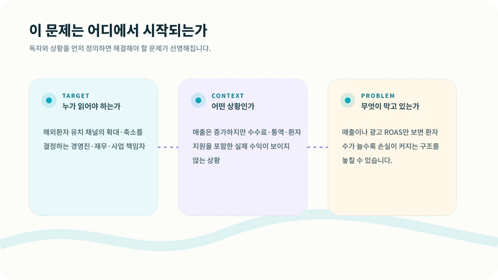
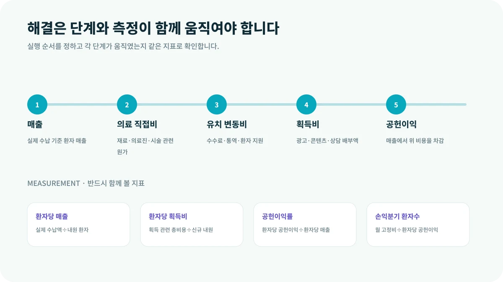

해외환자 매출이 늘었는데 통장 잔액은 늘지 않는 경우가 있습니다. 광고비, 에이전시 수수료, 통역과 이동 지원, 결제 수수료가 환자마다 붙기 때문입니다. 매출 성장과 사업 성장이 항상 같은 방향은 아닙니다.
이 글은 해외환자 유치 채널의 확대·축소를 결정하는 경영진·재무·사업 책임자에게 특히 필요합니다. 지금처럼 매출은 증가하지만 수수료·통역·환자 지원을 포함한 실제 수익이 보이지 않는 상황이라면, 먼저 숫자를 늘리기보다 문제의 구조를 다시 볼 필요가 있습니다.

CORE INSIGHT핵심은 관점을 바꾸는 것입니다
환자 한 명의 매출이 500만원이어도 의료 직접비 150만원, 유치 수수료 150만원, 광고와 상담비 80만원, 통역·지원비 50만원이 들면 공헌이익은 70만원입니다. 이때 월 고정 운영비가 700만원이라면 최소 10명의 실제 내원이 필요합니다.
WHY IT HAPPENS왜 이런 일이 반복될까요?
1. 직접비를 빠짐없이 봅니다
광고비뿐 아니라 에이전시 수수료, 통역, 교통·숙박 지원, 결제 수수료, 상담 인건비를 포함합니다.
2. 시술별 경제성이 다릅니다
같은 국가라도 객단가, 의료 원가, 사후관리 부담에 따라 허용 가능한 획득비가 달라집니다.
3. 고정비와 변동비를 분리합니다
구축비·상시 운영비와 환자 발생 시 드는 비용을 나눠야 규모 확대 효과를 판단할 수 있습니다.
HOW TO SOLVE현장에서는 이렇게 풀어야 합니다
해결은 한 번의 캠페인이나 담당자의 노력만으로 완성되지 않습니다. 다음 다섯 단계를 하나의 흐름으로 연결하고, 단계가 바뀔 때마다 기록을 남겨야 합니다.

MEASUREMENT무엇을 측정해야 할까요?
결과만 보면 문제가 발생한 위치를 알 수 없습니다. 아래 지표를 같은 기간과 같은 정의로 추적하면 어느 단계가 실제 병목인지 확인할 수 있습니다.
| 환자당 매출 | 실제 수납액÷내원 환자 |
|---|---|
| 환자당 획득비 | 획득 관련 총비용÷신규 내원 |
| 공헌이익률 | 환자당 공헌이익÷환자당 매출 |
| 손익분기 환자수 | 월 고정비÷환자당 공헌이익 |
START THIS WEEK이번 주에 바로 확인할 네 가지
유닛 이코노믹스는 비용을 줄이는 계산만이 아닙니다. 어떤 시술과 국가, 채널에 더 투자할지 결정하는 성장 지도입니다. 환자 수보다 환자 한 명이 남기는 구조를 먼저 확인해야 합니다.
GUARDRAIL실행 전에 반드시 확인할 점
본 콘텐츠는 병원 사업·운영을 위한 일반 정보이며, 의료·법률·세무 자문을 대체하지 않습니다. 실제 적용 시 관련 전문가와 최신 법령을 확인해야 합니다.
현재 병원의 병목을 함께 찾아보세요.
시장·마케팅·상담·CRM·운영 중 어디에서 성장이 멈추는지 구조적으로 진단합니다.